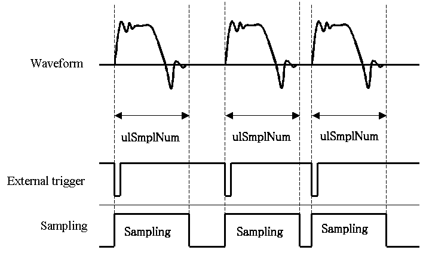

AdMemTriggerSampling
Description
The AdMemTriggerSampling function acquires the specified number of samples at each external trigger assertion. Sampling can be continued to reach the specified number. Syntax
C
Visual Basic
INT AdMemTriggerSampling( HANDLE hDeviceHandle, ULONG ulChCount, PADSMPLCHREQ lpSmplChReq, ULONG ulSmplNum, ULONG ulRepeatCount, ULONG ulTrigEdge, float fSmplFreq, ULONG ulEClkEdge, ULONG ulFastMode );
Declare Function AdMemTriggerSampling Lib _ "FbiAd.DLL" ( _ ByVal hDeviceHandle As Long, _ ByVal ulChCount As Long, _ ByRef lpSmplChReq As ADSMPLCHREQ, _ ByVal ulSmplNum As Long, _ ByVal ulRepeatCount As Long, _ ByVal ulTrigEdge As Long, _ ByVal fSmplFreq As Single, _ ByVal ulEClkEdge As Long, _ ByVal ulFastMode As Long _ ) As Long
Delphi
function AdMemTriggerSampling( hDeviceHandle : Integer; ulChCount : Integer; var lpSmplChReq : Integer; ulSmplNum : Integer; ulRepeatCount : Integer; ulTrigEdge : Integer; fSmplFreq : Single; ulEClkEdge : Integer; ulFastMode : Integer ) : DWORD; stdcall; external 'FbiAd.DLL'; Parameters
hDeviceHandle Specifies the device handle obtained by the AdOpen function. ulChCount Specifies the number of channels where data are sampled. The channel number is specified in the nChNo member of the ADSMPLCHREQ structure. lpSmplChReq Points to an array of the ADSMPLCHREQ structure. Please specify consecutive channels from 1. ulSmplNum Specifies the number of data per channel per trigger. ulRepeatCount Specifies the number of iteration that the following condition to be satisfied.
1 <= (the number of samples for one sampling sequence) * (the number of repetition) <= (maximum memory locations per channel).ulTrigEdge Specifies the polarity of the external trigger by using the following codes.
Code
Description AD_DOWN_EDGE Falling edge AD_UP_EDGE Rising edge fSmplFreq Specifies the sampling rate.
20000000 Hz (Only applicable to the PCI-3161) 16000000 Hz (Only applicable to the PCI-3161) 10000000 Hz 8000000 Hz 5000000 Hz 4000000 Hz 2500000 Hz 2000000 Hz 1250000 Hz 1000000 Hz 625000 Hz 500000 Hz 312500 Hz 250000 Hz 156250 Hz 125000 Hz 78125 Hz 62500 Hz 0.0 Hz (an external clock signal is used for a sampling pacer.) ulEClkEdge Specifies the trigger edge of the external clock signal by using the following codes.
Code Value Description AD_DOWN_EDGE 1 Falling edge AD_UP_EDGE 2 Rising edge ulFastMode Specifies a clock mode by using the following codes. Double-clocked mode is applicable only to the boards of memory transfer mode.
Code Value Description AD_NORMAL_MODE 1 Normal mode (default setting) AD_FAST_MODE 2 Double-clocked mode
Return Value
The AdMemTriggerSampling function returns AD_ERROR_SUCCESS if the process is successfully completed. Otherwise, this function returns another code. Please refer to the error codes. Comments
- The bus master transfer mode boards can operate as same as above boards by using the AdBmSetSamplingConfig and AdStartSampling functions.
- This function always performs as an overlapped operation.
- The event notification and the callback capability are available. To configure the event notification and the callback routine, please use the AdSetBoardConfig function.
- To abort the running sampling, use the AdStopSampling function.
- To retrieve the data from the buffer, use the AdGetSamplingData function.
- Use the AdSetSamplingConfig function to configure the sampling conditions that are not provided by this function.
- When the double-clocked mode is used, the following parameters change as described below.
Parameter Description ulChCount Available channels decrease to a half of channels that the board supports. ulSmplNum The number of samples must be a multiple of 2048 up to two times memory locations per channel. The number is in the range of 2048 through 1048576 for the PCI-3161 and PCI-3163. fSmplFreq Actual sampling rate is two times specified value. Specify 500000 Hz, the sampling rate is 1000000 Hz.
- The following figure illustrates behavior of the sampling with this function.

- When an external trigger is asserted on the EXTRG IN pin, the board starts sampling. When specified number of samples are acquired, the board stop sampling. A wait state of 3 µs is required between the completion of the sampling and next assertion of the trigger.
- Refer to the "List of Capabilities for Each model" for the model and available functions.
Target Products
Refer to Corresponding Identifiers for Each Model". Examples
C
Visual Basic
ADSMPLCHREQ SmplChReq[2];
SmplChReq[0].ulChNo = 1; SmplChReq[0].ulRange = AD_5V; SmplChReq[1].ulChNo = 2; SmplChReq[1].ulRange = AD_5V; nRet = AdMemTriggerSampling( hDeviceHandle, 2, SmplChReq, 1024, 5, AD_DOWN_EDGE, 625000, AD_DOWN_EDGE, AD_NORMAL_MODE );
Dim SmplChReq(1) As ADSMPLCHREQ
SmplChReq(0).ulChNo = 1 SmplChReq(0).ulRange = AD_5V SmplChReq(1).ulChNo = 2 SmplChReq(1).ulRange = AD_5V nRet = AdMemTriggerSampling( hDeviceHandle, 2, _ SmplChReq(0), 1024, 5, AD_DOWN_EDGE, 625000, _ AD_DOWN_EDGE, AD_NORMAL_MODE
Delphi
var
SmplChReq: array[0..3] of ADSMPLCHREQ; SmplChReq[0].ulChNo := 1; SmplChReq[0].ulRange := AD_5V; SmplChReq[1].ulChNo := 2; SmplChReq[1].ulRange := AD_5V; nRet = AdMemTriggerSampling ( hDeviceHandle, 2, SmplChReq, 1024, 5, AD_DOWN_EDGE, 625000, AD_DOWN_EDGE, AD_NORMAL_MODE );
Acquire samples from the board specified by hDeviceHandle under the following conditions.
Parameter Setting Channel number 1 and 2 Input range bipolar +/-5 V Number of samples 1024 Repetition times 5 Trigger EXTRG IN, falling edge Sampling rate 625 kHz
© 2000, 2013 Interface Corporation. All rights reserved.
[Top]